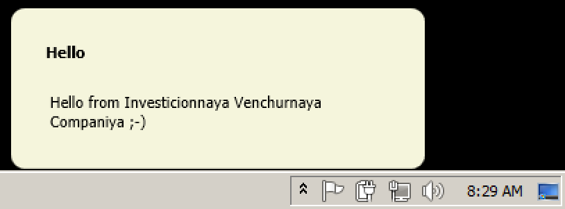
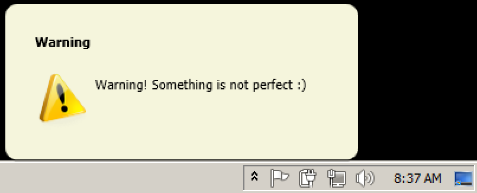

Another Balloon Tip Implementation
Alexander Ignatovich, or Игнатович Александр, responds to the recent discussion on using balloon tips in Revit and says:
I want to share another solution for balloon tips for custom messages, without using the unsupported AdWindows library.
Just see the project attached in YetAnotherBalloonTip.zip :-)
Alexander's solution provides three different sample commands:
- Simple balloon
- Warning balloon
- Balloon from another thread
The implementation is packaged in a separate self-contained class named NotifyBox, so instantiating a simple balloon tip is really very simple indeed, in one single constructor call:
using Autodesk.Revit.Attributes; using Autodesk.Revit.DB; using Autodesk.Revit.UI; using IVC.NotifyBox.Controls; using IVC.NotifyBox.ViewModel.Enums; namespace YetAnotherBaloons { [Transaction( TransactionMode.Manual )] public class StartSimpleBaloonCommand : IExternalCommand { public Result Execute( ExternalCommandData commandData, ref string message, ElementSet elements ) { NotifyBox.Show( "Hello", "Hello from " + "Investicionnaya Venchurnaya Companiya ;-)", NotificationDuration.Short ); return Result.Succeeded; } } }
An argument enables you to specify the duration.
The resulting balloon tip looks like this, and fades away after a moment:

Another argument allows you to specify an icon, e.g. to implement a warning balloon tip:
public class StartWarningBaloonCommand : IExternalCommand { public Result Execute( ExternalCommandData commandData, ref string message, ElementSet elements ) { NotifyBox.Show( "Warning", "Warning! Something is not perfect :)", NotificationIcon.Warning, NotificationDuration.Medium ); return Result.Succeeded; } }
The resulting balloon tip includes an icon:

Since the balloon tip class is completely independent of Revit, it can obviously be called from a different thread as well:
public class StartBaloonFromAnotherThreadCommand : IExternalCommand { public Result Execute( ExternalCommandData commandData, ref string message, ElementSet elements ) { System.Threading.Tasks.Task.Factory.StartNew( () => { Thread.Sleep( TimeSpan.FromSeconds( 3 ) ); NotifyBox.Show( "Warning", "This message is from another thread!", NotificationIcon.Warning, NotificationDuration.Medium ); } ); return Result.Succeeded; } }
Many thanks to Alexander for sharing this!